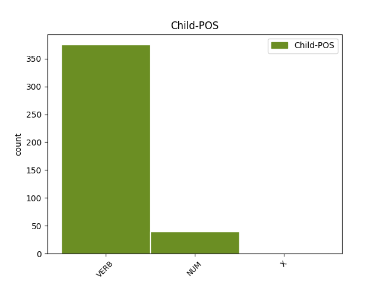

Distribution of features within this leaf

Agreement Rules sorted by frequency.
- When the dependent token is the modifer(mod) of the head token, and the dependent token is VERB.
1 Neque _ _ _ _ 0 _ _ _
2 enim _ _ _ _ 0 _ _ _
3 ante _ _ _ _ 0 _ _ _
4 dehiscent _ _ _ _ 0 _ _ _
5 attonitae attono VERB v-srppfg- Aspect=Perf|Case=Gen|Gender=Fem|Number=Sing|Tense=Past|VerbForm=Part|Voice=Pass 8 mod _ _
6 magna _ _ _ _ 0 _ _ _
7 ora _ _ _ _ 0 _ _ _
8 domus domus NOUN n-s---fg- Case=Gen|Gender=Fem|Number=Sing 0 _ _ _
9 . _ _ _ _ 0 _ _ _
10 ' _ _ _ _ 0 _ _ _
1 Catilina _ _ _ _ 0 _ _ _
2 postquam _ _ _ _ 0 _ _ _
3 fusas fundo VERB v-prppfa- Aspect=Perf|Case=Acc|Gender=Fem|Number=Plur|Tense=Past|VerbForm=Part|Voice=Pass 0 _ _ _
4 copias _ _ _ _ 0 _ _ _
5 que _ _ _ _ 0 _ _ _
6 se _ _ _ _ 0 _ _ _
7 cum _ _ _ _ 0 _ _ _
8 paucis _ _ _ _ 0 _ _ _
9 relictum relinquo VERB v-srppma- Aspect=Perf|Case=Acc|Gender=Masc|Number=Sing|Tense=Past|VerbForm=Part|Voice=Pass 3 conj _ LId=relinquo1
10 videt _ _ _ _ 0 _ _ _
11 , _ _ _ _ 0 _ _ _
12 memor _ _ _ _ 0 _ _ _
13 generis _ _ _ _ 0 _ _ _
14 atque _ _ _ _ 0 _ _ _
15 pristinae _ _ _ _ 0 _ _ _
16 suae _ _ _ _ 0 _ _ _
17 dignitatis _ _ _ _ 0 _ _ _
18 in _ _ _ _ 0 _ _ _
19 confertissumos _ _ _ _ 0 _ _ _
20 hostis _ _ _ _ 0 _ _ _
21 incurrit _ _ _ _ 0 _ _ _
22 que _ _ _ _ 0 _ _ _
23 ibi _ _ _ _ 0 _ _ _
24 pugnans _ _ _ _ 0 _ _ _
25 confoditur _ _ _ _ 0 _ _ _
26 . _ _ _ _ 0 _ _ _
1 una unus NUM m-s---fn- Case=Nom|Gender=Fem|Number=Sing 2 mod _ _
2 dies dies NOUN n-s---fn- Case=Nom|Gender=Fem|Number=Sing 0 _ _ _
3 omnis _ _ _ _ 0 _ _ _
4 potuit _ _ _ _ 0 _ _ _
5 praecurrere _ _ _ _ 0 _ _ _
6 amantis _ _ _ _ 0 _ _ _
7 . _ _ _ _ 0 _ _ _
1 Piso _ _ _ _ 0 _ _ _
2 oppugnatus oppugno VERB v-srppmn- Aspect=Perf|Case=Nom|Gender=Masc|Number=Sing|Tense=Past|VerbForm=Part|Voice=Pass 0 _ _ _
3 in _ _ _ _ 0 _ _ _
4 iudicio _ _ _ _ 0 _ _ _
5 pecuniarum _ _ _ _ 0 _ _ _
6 repetundarum _ _ _ _ 0 _ _ _
7 propter _ _ _ _ 0 _ _ _
8 quoiusdam _ _ _ _ 0 _ _ _
9 Transpadani _ _ _ _ 0 _ _ _
10 supplicium _ _ _ _ 0 _ _ _
11 iniustum _ _ _ _ 0 _ _ _
12 , _ _ _ _ 0 _ _ _
13 Catulus _ _ _ _ 0 _ _ _
14 ex _ _ _ _ 0 _ _ _
15 petitione _ _ _ _ 0 _ _ _
16 pontificatus _ _ _ _ 0 _ _ _
17 odio _ _ _ _ 0 _ _ _
18 incensus incendo VERB v-srppmn- Aspect=Perf|Case=Nom|Gender=Masc|Number=Sing|Tense=Past|VerbForm=Part|Voice=Pass 2 parataxis _ LId=incendo1|SpaceAfter=No
19 , _ _ _ _ 0 _ _ _
20 quod _ _ _ _ 0 _ _ _
21 extrema _ _ _ _ 0 _ _ _
22 aetate _ _ _ _ 0 _ _ _
23 , _ _ _ _ 0 _ _ _
24 maxumis _ _ _ _ 0 _ _ _
25 honoribus _ _ _ _ 0 _ _ _
26 usus _ _ _ _ 0 _ _ _
27 , _ _ _ _ 0 _ _ _
28 ab _ _ _ _ 0 _ _ _
29 adulescentulo _ _ _ _ 0 _ _ _
30 Caesare _ _ _ _ 0 _ _ _
31 victus _ _ _ _ 0 _ _ _
32 discesserat _ _ _ _ 0 _ _ _
33 . _ _ _ _ 0 _ _ _
1 die _ _ _ _ 0 _ _ _
2 senatus _ _ _ _ 0 _ _ _
3 numquam _ _ _ _ 0 _ _ _
4 patres _ _ _ _ 0 _ _ _
5 nisi _ _ _ _ 0 _ _ _
6 in _ _ _ _ 0 _ _ _
7 curia _ _ _ _ 0 _ _ _
8 salutauit _ _ _ _ 0 _ _ _
9 et _ _ _ _ 0 _ _ _
10 quidem _ _ _ _ 0 _ _ _
11 sedentis sedeo VERB v-ppp-ma- Case=Acc|Gender=Masc|Number=Plur|Tense=Pres|VerbForm=Part 0 _ _ _
12 ac _ _ _ _ 0 _ _ _
13 nominatim _ _ _ _ 0 _ _ _
14 singulos singuli NUM m-p---ma- Case=Acc|Gender=Masc|Number=Plur 11 conj _ _
15 nullo _ _ _ _ 0 _ _ _
16 submonente _ _ _ _ 0 _ _ _
17 ; _ _ _ _ 0 _ _ _
1 At _ _ _ _ 0 _ _ _
2 Romae _ _ _ _ 0 _ _ _
3 Lentulus _ _ _ _ 0 _ _ _
4 cum _ _ _ _ 0 _ _ _
5 ceteris _ _ _ _ 0 _ _ _
6 , _ _ _ _ 0 _ _ _
7 qui _ _ _ _ 0 _ _ _
8 principes _ _ _ _ 0 _ _ _
9 coniurationis _ _ _ _ 0 _ _ _
10 erant _ _ _ _ 0 _ _ _
11 , _ _ _ _ 0 _ _ _
12 paratis _ _ _ _ 0 _ _ _
13 ut _ _ _ _ 0 _ _ _
14 videbatur _ _ _ _ 0 _ _ _
15 magnis _ _ _ _ 0 _ _ _
16 copiis _ _ _ _ 0 _ _ _
17 constituerant _ _ _ _ 0 _ _ _
18 , _ _ _ _ 0 _ _ _
19 uti _ _ _ _ 0 _ _ _
20 , _ _ _ _ 0 _ _ _
21 quom _ _ _ _ 0 _ _ _
22 Catilina _ _ _ _ 0 _ _ _
23 in _ _ _ _ 0 _ _ _
24 agrum ager NOUN n-s---ma- Case=Acc|Gender=Masc|Number=Sing 0 _ _ _
25 Aefulanum Aefulanus X ------ma- Case=Acc|Gender=Masc 24 mod _ _
26 cum _ _ _ _ 0 _ _ _
27 exercitu _ _ _ _ 0 _ _ _
28 venisset _ _ _ _ 0 _ _ _
29 , _ _ _ _ 0 _ _ _
30 L _ _ _ _ 0 _ _ _
31 . _ _ _ _ 0 _ _ _
32 Bestia _ _ _ _ 0 _ _ _
33 tribunus _ _ _ _ 0 _ _ _
34 plebis _ _ _ _ 0 _ _ _
35 contione _ _ _ _ 0 _ _ _
36 habita _ _ _ _ 0 _ _ _
37 quereretur _ _ _ _ 0 _ _ _
38 de _ _ _ _ 0 _ _ _
39 actionibus _ _ _ _ 0 _ _ _
40 Ciceronis _ _ _ _ 0 _ _ _
41 que _ _ _ _ 0 _ _ _
42 belli _ _ _ _ 0 _ _ _
43 gravissumi _ _ _ _ 0 _ _ _
44 invidiam _ _ _ _ 0 _ _ _
45 optumo _ _ _ _ 0 _ _ _
46 consuli _ _ _ _ 0 _ _ _
47 inponeret _ _ _ _ 0 _ _ _
48 : _ _ _ _ 0 _ _ _
Disagree Examples:
1 Tunc _ _ _ _ 0 _ _ _
2 consolandi consolor VERB v-s-d--g- Case=Gen|Number=Sing|VerbForm=Ger 3 mod _ _
3 gratia gratia NOUN n-s---fb- Case=Abl|Gender=Fem|Number=Sing 0 _ _ _
4 dixit _ _ _ _ 0 _ _ _
5 dea _ _ _ _ 0 _ _ _
6 : _ _ _ _ 0 _ _ _
1 Tribuniciae _ _ _ _ 0 _ _ _
2 potestatis _ _ _ _ 0 _ _ _
3 duodevicensimum _ _ _ _ 0 _ _ _
4 , _ _ _ _ 0 _ _ _
5 consul consul NOUN n-s---mn- Case=Nom|Gender=Masc|Number=Sing 0 _ _ _
6 XII duodecim NUM m-----na- Case=Acc|Gender=Neut 5 mod _ SpaceAfter=No
7 , _ _ _ _ 0 _ _ _
8 trecentis _ _ _ _ 0 _ _ _
9 et _ _ _ _ 0 _ _ _
10 viginti _ _ _ _ 0 _ _ _
11 millibus _ _ _ _ 0 _ _ _
12 plebis _ _ _ _ 0 _ _ _
13 urbanae _ _ _ _ 0 _ _ _
14 sexagenos _ _ _ _ 0 _ _ _
15 denarios _ _ _ _ 0 _ _ _
16 viritim _ _ _ _ 0 _ _ _
17 dedi _ _ _ _ 0 _ _ _
18 . _ _ _ _ 0 _ _ _
1 nam _ _ _ _ 0 _ _ _
2 cum _ _ _ _ 0 _ _ _
3 possessor _ _ _ _ 0 _ _ _
4 uillae _ _ _ _ 0 _ _ _
5 nouus _ _ _ _ 0 _ _ _
6 seu _ _ _ _ 0 _ _ _
7 forte _ _ _ _ 0 _ _ _
8 seu _ _ _ _ 0 _ _ _
9 temptandi tento VERB v-s-d--g- Case=Gen|Number=Sing|VerbForm=Ger 10 mod _ _
10 causa causa NOUN n-s---fb- Case=Abl|Gender=Fem|Number=Sing 0 _ _ _
11 cubitum _ _ _ _ 0 _ _ _
12 se _ _ _ _ 0 _ _ _
13 eo _ _ _ _ 0 _ _ _
14 contulisset _ _ _ _ 0 _ _ _
15 , _ _ _ _ 0 _ _ _
16 euenit _ _ _ _ 0 _ _ _
17 ut _ _ _ _ 0 _ _ _
18 post _ _ _ _ 0 _ _ _
19 paucissimas _ _ _ _ 0 _ _ _
20 noctis _ _ _ _ 0 _ _ _
21 horas _ _ _ _ 0 _ _ _
22 exturbatus _ _ _ _ 0 _ _ _
23 inde _ _ _ _ 0 _ _ _
24 subita _ _ _ _ 0 _ _ _
25 ui _ _ _ _ 0 _ _ _
26 et _ _ _ _ 0 _ _ _
27 incerta _ _ _ _ 0 _ _ _
28 paene _ _ _ _ 0 _ _ _
29 semianimis _ _ _ _ 0 _ _ _
30 cum _ _ _ _ 0 _ _ _
31 strato _ _ _ _ 0 _ _ _
32 simul _ _ _ _ 0 _ _ _
33 ante _ _ _ _ 0 _ _ _
34 fores _ _ _ _ 0 _ _ _
35 inueniretur _ _ _ _ 0 _ _ _
36 . _ _ _ _ 0 _ _ _
1 profectum _ _ _ _ 0 _ _ _
2 mox _ _ _ _ 0 _ _ _
3 auunculum _ _ _ _ 0 _ _ _
4 in _ _ _ _ 0 _ _ _
5 Hispanias _ _ _ _ 0 _ _ _
6 aduersus _ _ _ _ 0 _ _ _
7 Cn. _ _ _ _ 0 _ _ _
8 Pompei _ _ _ _ 0 _ _ _
9 liberos _ _ _ _ 0 _ _ _
10 uixdum _ _ _ _ 0 _ _ _
11 firmus _ _ _ _ 0 _ _ _
12 a _ _ _ _ 0 _ _ _
13 graui _ _ _ _ 0 _ _ _
14 ualitudine _ _ _ _ 0 _ _ _
15 per _ _ _ _ 0 _ _ _
16 infestas _ _ _ _ 0 _ _ _
17 hostibus _ _ _ _ 0 _ _ _
18 uias _ _ _ _ 0 _ _ _
19 paucissimis _ _ _ _ 0 _ _ _
20 comitibus _ _ _ _ 0 _ _ _
21 naufragio _ _ _ _ 0 _ _ _
22 etiam _ _ _ _ 0 _ _ _
23 facto facio VERB v-srppnb- Aspect=Perf|Case=Abl|Gender=Neut|Number=Sing|Tense=Past|VerbForm=Part|Voice=Pass 24 mod _ _
24 subsecutus subsequor VERB v-srpdmn- Aspect=Perf|Case=Nom|Gender=Masc|Number=Sing|Tense=Past|VerbForm=Part|Voice=Act 0 _ _ _
25 , _ _ _ _ 0 _ _ _
26 magnopere _ _ _ _ 0 _ _ _
27 demeruit _ _ _ _ 0 _ _ _
28 , _ _ _ _ 0 _ _ _
29 approbata _ _ _ _ 0 _ _ _
30 cito _ _ _ _ 0 _ _ _
31 etiam _ _ _ _ 0 _ _ _
32 morum _ _ _ _ 0 _ _ _
33 indole _ _ _ _ 0 _ _ _
34 super _ _ _ _ 0 _ _ _
35 itineris _ _ _ _ 0 _ _ _
36 industriam _ _ _ _ 0 _ _ _
37 . _ _ _ _ 0 _ _ _
1 unde _ _ _ _ 0 _ _ _
2 praebitam _ _ _ _ 0 _ _ _
3 Antonio _ _ _ _ 0 _ _ _
4 materiam materia NOUN n-s---fa- Case=Acc|Gender=Fem|Number=Sing 0 _ _ _
5 putem _ _ _ _ 0 _ _ _
6 exprobrandi exprobro VERB v-s-d--g- Case=Gen|Number=Sing|VerbForm=Ger 4 mod _ SpaceAfter=No
7 : _ _ _ _ 0 _ _ _